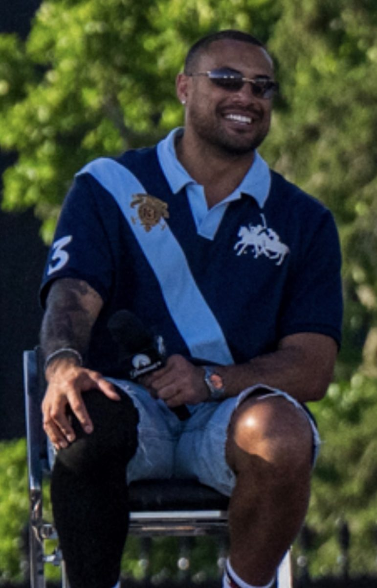

Иржи Прохазка и Навахо Стерлинг сделали вес перед главным боем UFC в Катаре
Оба бойца полутяжелого веса показали на весах в Дохе ровно 93 кг перед субботней схваткой на ABHA Arena.

Бывший чемпион UFC в полутяжелом весе Иржи Прохазка и непобежденный претендент Навахо Стерлинг (Navajo Stirling) завершили обязательную программу перед боем напряженной дуэлью взглядов в Дохе, успешно уложившись в лимит полутяжелого веса — оба показали на весах ровно 205 фунтов (93 кг). Пятираундовый бой полутяжеловесов возглавит турнир UFC Fight Night 294, который пройдет в субботу, 21 ноября, на арене имени Али бин Хамада аль-Аттии (ABHA Arena) в Эр-Райяне (Катар).
Пятничная битва взглядов задала тон важнейшему противостоянию в дивизионе до 93 кг. Прохазка (32-6-1) занимает вторую строчку рейтинга и возвращается в октагон впервые после апрельского поражения нокаутом от Карлоса Ульберга. Пятый номер рейтинга Стерлинг (11-0) дебютирует в статусе хедлайнера турнира сильнейшей лиги мира: за 2026 календарный год новозеландец оформил уже три досрочные победы подряд, причем в крайнем бою в августе он финишировал экс-чемпиона Яна Блаховича уже в первом раунде.
Фактор зала City Kickboxing

Интрига этого поединка носит не только тактический, но и личный характер: Стерлинг тренируется в знаменитом оклендском зале City Kickboxing и выступает главным спарринг-партнером Ульберга. Прохазка, завоевавший титул в июне 2022 года на турнире UFC 275 удушающим приемом против Гловера Тейшейры и впоследствии освободивший пояс из-за тяжелой травмы плеча, в течение медианедели неоднократно подчеркивал: победа над Стерлингом должна расчистить ему дорогу к титульному реваншу с Ульбергом.
29-летний Стерлинг пробился в промоушен через Претендентскую серию Даны Уайта (DWCS) в 2024 году и уже набил в октагоне рекорд 6-0. В преддверии боя новозеландец отметил, что защита Прохазки оставляет желать лучшего и чех слишком много пропускает, назвав это своим главным ключом к победе. Чешский самурай в ответ заявил, что готов к любому сценарию — как к молниеносной досрочной развязке, так и к изнурительной 25-минутной тактической позиционной войне.
Результаты взвешивания андеркарда
Одиннадцать из двенадцати запланированных поединков получили официальный статус без каких-либо сложностей на утренней процедуре взвешивания. В соглавном событии вечера бывший чемпион в легчайшем весе Алджамейн Стерлинг (26-5) и аргентинский полулегковес Кевин Вальехос (Kevin Vallejos, 18-1) без проблем уложились в рамки дивизиона до 145 фунтов (65,8 кг). В главном карде экс-претендент на титул в легком весе Брайан Ортега (155,5 фунта / 70,5 кг) встретится с Дэном Хукером (156 фунтов / 70,8 кг), топовый представитель наилегчайшего дивизиона Асу Алмабаев (125,5 фунта / 56,9 кг) разделит октагон с экс-чемпионом Rizin Кёдзи Хоригути (126 фунтов / 57,2 кг), а средневес Джаред Каннонир (185 фунтов / 83,9 кг) протестирует Икрама Алискерова (185,5 фунта / 84,1 кг).

Единственная осечка на весах случилась в предварительном карде полусреднего веса: Тахир Абдуллаев (Tahir Abdullayev) показал 172 фунта (78 кг), превысив лимит нетитульного боя на один фунт перед встречей с Джейком Мэттьюсом (170 фунтов / 77,1 кг). Абдуллаев оштрафован на процент от гонорара, а поединок пройдет в промежуточном весе. Турнир станет вторым ивентом UFC в Катаре после дебюта лиги в ноябре 2025 года.